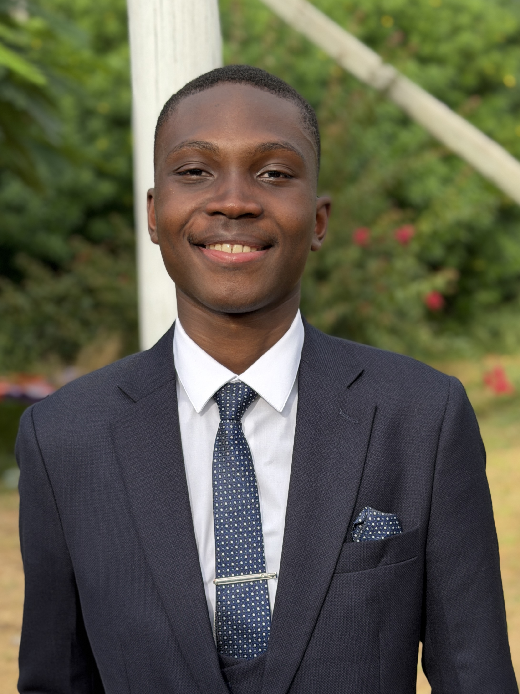

📍 Lisboa, Portugal
🎓 Estudante de Mestrado em Engenharia Eletrónica
Sobre Mim
Estudante de Mestrado em Engenharia Eletrónica no Instituto Superior Técnico, com experiência prática no desenvolvimento de soluções integradas de hardware e software baseadas em microcontroladores e sistemas de comunicação.
Em paralelo, trabalho na área da engenharia civil na documentação de projetos, com experiência na organização de projetos, análise de informação e utilização de ferramentas como o Excel para apoio à gestão de dados. Tenho como objetivo continuar a desenvolver as minhas competências técnicas e profissionais através de desafios práticos na área da engenharia eletrónica.
🎓 Formação Académica
Instituto Superior Técnico
Mestrado em Engenharia Eletrónica
Set 2026 - Jul 2028
Mestrado em Engenharia Eletrónica no Instituto Superior Técnico, expandindo conhecimentos em sistemas embebidos, eletrónica programável, hardware integrado, sistemas de comunicação e tecnologias eletrónicas inteligentes. Focado na conceção de sistemas eletrónicos fiáveis e de alto desempenho, desenvolvendo simultaneamente competências avançadas de investigação, resolução de problemas e engenharia.
Instituto Superior Técnico
Licenciatura em Engenharia Eletrónica
Set 2022 - Jul 2026
Licenciatura em Engenharia Eletrónica no Instituto Superior Técnico, com uma base sólida em eletrónica, sistemas embebidos, telecomunicações, programação e processamento de sinal. Experiência no desenvolvimento de soluções de hardware e software através de projetos práticos de engenharia.
💼 Experiência Profissional
NEGRIL - Soluçōes de Engenharia Lda.
Assistente de Documentação de Projetos
Out 2025 – Presente
Presto apoio à equipa de engenharia civil na preparação, organização e atualização de documentação relacionada com os projetos em curso. As minhas responsabilidades incluem a criação e gestão de folhas de cálculo Excel, relatórios e registos de obra, garantindo a conformidade e um controlo documental eficiente em todas as fases do projeto.
Blue Coyote - Animação Turística, Lda.
Assistente de Documentação de Projetos
Out 2024 - Jul 2025
Presto apoio à equipa de engenharia civil na preparação, organização e atualização de documentação relacionada com os projetos em curso. As minhas responsabilidades incluem a criação e gestão de folhas de cálculo Excel, relatórios e registos de obra, garantindo a conformidade e um controlo documental eficiente em todas as fases do projeto.